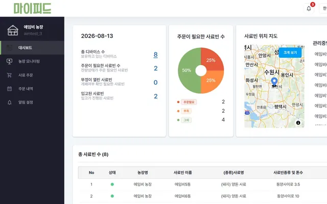
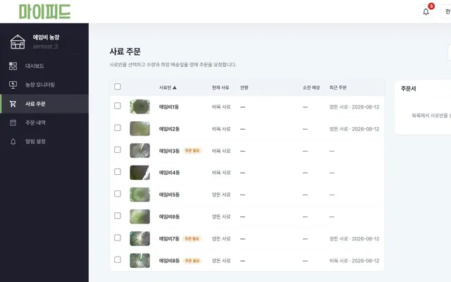
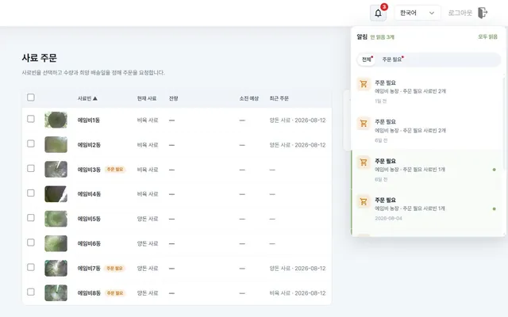
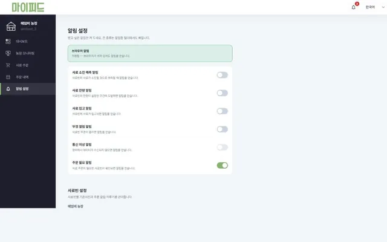
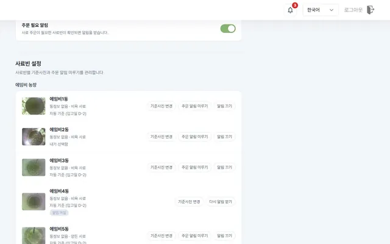

문의에서 시작해,
화면에서 끝냅니다.
- 메뉴를 찾기 쉽게고객 문의에서 메뉴를 찾기 어렵다는 점을 확인하고, 주요 작업으로 가는 경로와 화면 가독성을 조정했습니다.
- 한 곳에서 고치는 공통 UI여러 페이지에 복제돼 있던 공통 UI를 한 곳에서 수정할 수 있게 정리했습니다.
- 언어별 키·값 문구화면 문구를 언어별 키·값으로 관리하도록 바꿔, 번역 API 응답을 기다리던 흐름을 개선했습니다.
마이피드는 2026년 7월 기준 130여 농가가 사용하는 사료 관리 웹서비스입니다. 웹 개발과 운영을 맡아 농장 모니터링 화면, 관리자, 웹 알림을 만들고 고쳐 왔습니다.
담당 역할
웹 개발·운영 · 모니터링 화면 · 관리자 · 웹 알림




FastAPI · Jinja2 · JavaScript
모니터링 화면·관리자·웹 알림 구현, 요청 수와 응답 크기 줄이기, 공통 UI 정리, 언어팩 전환, 마스크 라벨링 기능.
앱 담당자와 요구사항·화면을 함께 정리했습니다. SAM2 모델 적용은 AI 담당자가 했습니다.
구간별 소요시간 로그를 넣어 병목을 특정한 뒤 고쳤습니다.
2026년 7월 변경 커밋 기준
안 읽은 알림 개수
분당 6회였던 조회를 1회로 줄이고, 숨은 탭에서는 멈추게 했습니다.
푸시가 끊겼을 때를 대비한 조회
특정 브라우저에서 알림이 표시되지 않는 현상을 다른 브라우저와 비교하며 범위를 좁혔고, 이 조회는 계속 돌도록 두었습니다.


이력 · 프로젝트에 대해 답해드립니다
AI가 이력서 데이터를 바탕으로 답합니다. 대화는 저장되지 않으며, 정확한 확인은 메일로 부탁드립니다.